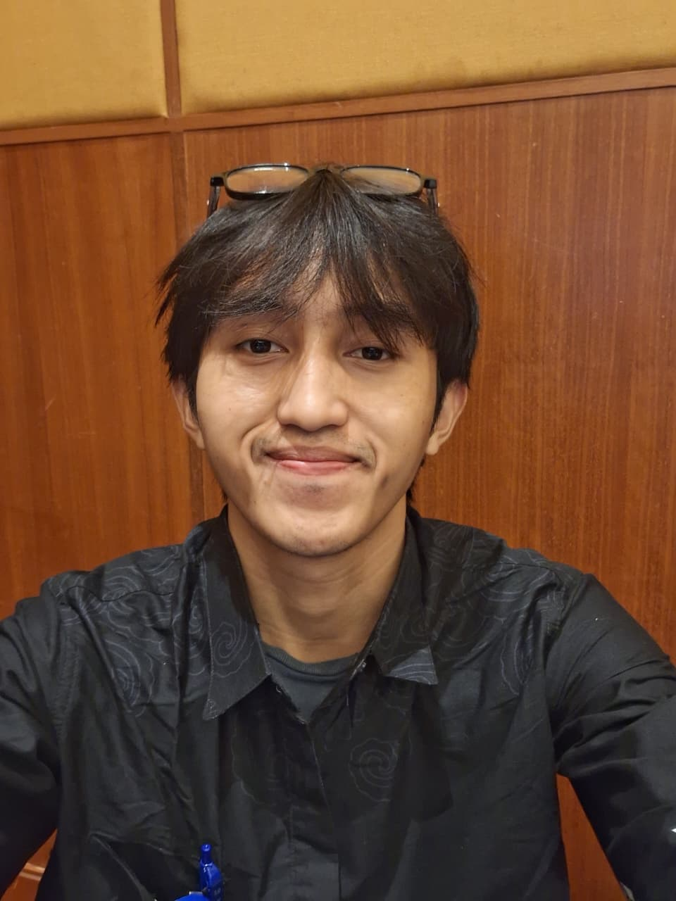

About Me

Nawal Syafiq Farihan
Urban And Regional Planning - Universitas Terbuka
Latar Belakang
Mahasiswa semester akhir S1 Perencanaan Wilayah dan Kota Universitas Terbuka dengan minat pada perencanaan wilayah dan analisis spasial. Berpengalaman menggunakan ArcGIS dan QGIS dalam analisis spaisal melalui kegiatan studio akademik, fasilitasi pelatihan SIG dasar, dan projcet penelitian.
Pengalaman Profesional
| Pengalaman | Tahun |
|---|---|
| Magang Bapperida Bidang Perencanaan Infrastruktur - Kota Bandung | 2026 |
| Fasilitator Pelatihan Klinik SIG - PWK Universitas Terbuka | 2025 dan 2026 |
| Project Leader SSN Batch 17 - YATC Indonesia | 2025 |
| Ketua Penelitian Mahasisswa - LPPM Univeristas Terbuka | 2025 |
| Sekretaris Unit Pengelola Kegiatan Pembangunan Gedung BLK Komunitas - Kabupaten Bandung | 2024 |
| Tenaga Pelatihan BLK Komunitas Akmal Bangkit Nusa - Kabupaten Bandung | 2023 |

Leave a Comment